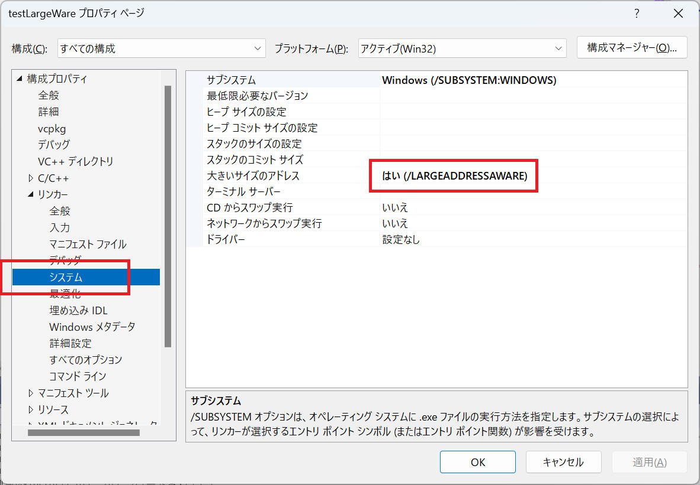

このページで触れているのは 32bit アプリを作成する場合に限定した話とテクニックについてです。
Win7 64bit（WoW64） ではプロセスあたり最大4GBを使用できます。
Win7 32bit ではプロセスあたり最大2GBを使用できます。
これはMicrosoftの正式見解です。
ただし、最大４GBで動作するには若干条件があるようです。
「IMAGE_FILE_LARGE_ADDRESS_AWARE 指定あり」でコンパイルした32bit exe だと最大4GB
ということらしいです。
Visual Studio 上で設定する場合、リンカーから "大きいサイズのアドレス" で "はい（/LARGEADDRESSAWARE）" を設定します。

.NET（C#)の場合は Visual Studio 上のコンパイルオプションで指定はできず、editbin という外部ツールでこのフラグを後付けします。
editbin /LARGEADDRESSAWARE $(TargetPath)
LARGEADDRESSAWAREがついたかどうかの確認は、
dumpbin /headers $(TargetPath)
を実行して、
Application can handle large (>2GB) addresses
と表示されればOKです。
評価環境やコンパイル環境などの情報があまり記載されていないので、いずれにせよテストプログラム等による確認が必要。ひょっとすると比較的新しい開発環境ではデフォルトで上記オプションが有効化されていたりする場合もあると思います。
Visual Studio と C++ を使ってテストプログラムを作成してみたので、以下結果報告。
評価環境は以下の通り。
| 開発環境 : | Visual Studio 2022 pro., | Version 17.5.1 |
| Visual Studio 2012 | ||
| OS : | Windows11 home, | 22H2 |
| Windows8 64bit | ||
1. x86 + LARGEADDRESSAWARE
こんなテストプログラムを作成。
約3.5GBのメモリを確保できました。"LARGEADDRESSAWARE"無しだと1.3GBぐらいまでしかメモリ確保できませんでした。

2. x64
同様に x64 コンパイルして実験。上限を確認してもきりがないので、メモリ取得サイズは8GBにて。

x64 だとやっぱり8GBなんて楽勝に取得できるみたいです。

3. サンプルプログラム
上記のテストプログラムを以下からダウンロードできるようにしておきます。
プログラムはWin32プロジェクトとして作成していますので、Visual
Studio 以外の環境へも移植が容易でしょう。
ダウンロード
補足説明１：
なお、ソースプログラム中にある以下の記述は Windows XP
以降のコモンコントロールを使用するための記述です。マニュフェストでコモンコントロールのバージョン情報を記載する必要があるそうで、VS2005から加わった
#pragma の記述だそうです。コモンコントロールのバージョンを 6.0.0.0
で指定します。このマニュフェストが無いとビジュアル的に古い感じのダイアログになってしまいます。
#if defined _M_IX86 #pragma comment(linker,"/manifestdependency:\"type='win32' name='Microsoft.Windows.Common-Controls' version='6.0.0.0' processorArchitecture='x86' publicKeyToken='6595b64144ccf1df' language='*'\"") #elif defined _M_IA64 #pragma comment(linker,"/manifestdependency:\"type='win32' name='Microsoft.Windows.Common-Controls' version='6.0.0.0' processorArchitecture='ia64' publicKeyToken='6595b64144ccf1df' language='*'\"") #elif defined _M_X64 #pragma comment(linker,"/manifestdependency:\"type='win32' name='Microsoft.Windows.Common-Controls' version='6.0.0.0' processorArchitecture='amd64' publicKeyToken='6595b64144ccf1df' language='*'\"") #else #pragma comment(linker,"/manifestdependency:\"type='win32' name='Microsoft.Windows.Common-Controls' version='6.0.0.0' processorArchitecture='*' publicKeyToken='6595b64144ccf1df' language='*'\"") #endif
補足説明２：
マニュフェストファイルを別ファイル指定してコンパイルしています。実行ファイルと同じ場所にあるマニュフェストファイルを消さないでください。
補足説明３：
(謎)x86の実行ファイルをデスクトップで実行した場合に、何故か上記補足説明１で有効化したはずのビジュアルスタイルが有効化されずに古いダイアログ形式で表示されました。謎です。
["test_LargeWare.cpp "]
#include "stdafx.h"
#include "testLargeWare.h"
using namespace std;
#if defined _M_IX86
#pragma comment(linker,"/manifestdependency:\"type='win32' name='Microsoft.Windows.Common-Controls' version='6.0.0.0' processorArchitecture='x86' publicKeyToken='6595b64144ccf1df' language='*'\"")
#elif defined _M_IA64
#pragma comment(linker,"/manifestdependency:\"type='win32' name='Microsoft.Windows.Common-Controls' version='6.0.0.0' processorArchitecture='ia64' publicKeyToken='6595b64144ccf1df' language='*'\"")
#elif defined _M_X64
#pragma comment(linker,"/manifestdependency:\"type='win32' name='Microsoft.Windows.Common-Controls' version='6.0.0.0' processorArchitecture='amd64' publicKeyToken='6595b64144ccf1df' language='*'\"")
#else
#pragma comment(linker,"/manifestdependency:\"type='win32' name='Microsoft.Windows.Common-Controls' version='6.0.0.0' processorArchitecture='*' publicKeyToken='6595b64144ccf1df' language='*'\"")
#endif
// #define
#define WM_ALLOC_COMPLETED (WM_USER+1) // ユーザー定義メッセージ
// グローバル変数:
HINSTANCE hInst;
// このコード モジュールに含まれる関数の宣言を転送します
BOOL CALLBACK DlgProc(HWND hWnd, UINT msg, WPARAM wp, LPARAM lp);
int APIENTRY _tWinMain(_In_ HINSTANCE hInstance,
_In_opt_ HINSTANCE hPrevInstance,
_In_ LPTSTR lpCmdLine,
_In_ int nCmdShow)
{
UNREFERENCED_PARAMETER(hPrevInstance);
UNREFERENCED_PARAMETER(lpCmdLine);
hInst = hInstance;
DialogBox(hInstance, MAKEINTRESOURCE(IDD_DIALOG1), NULL, (DLGPROC)DlgProc);
return 0;
}
void AllocMemory( HWND hWnd, vector<char*>& vBuffer, unsigned int bytes, int& allocsize )
{
bool bSuccess = true;
// バッファをクリア
{
for ( size_t i=0; i<vBuffer.size(); ++i){
delete[] vBuffer[i];
vBuffer[0] = nullptr;
}
vBuffer.clear();
vBuffer.resize(0);
vector<char*>(vBuffer).swap(vBuffer);
allocsize = 0;
}
// メモリを取得
{
int j;
int k;
const int allocBytesUnit = 128 ; // 128MB単位でメモリを確保
// allocBytesUnit 単位で確保する個数と余りを算出する
j = bytes / allocBytesUnit;
k = bytes - ( j * allocBytesUnit );
try{
// allocBytesUnit 単位でメモリ領域を確保する
for ( int i = 0; i < j; i++ ) {
char *p = new char[ allocBytesUnit * 1024 * 1024 ];
if ( nullptr == p ){
break;
}
for ( int l = 0; l < k * 1024 * 1024; l++ ){
( (char*)p )[l] = 0;
}
vBuffer.push_back( p );
allocsize += allocBytesUnit;
}
// 余りの分を確保する
if ( k > 0 ) {
char *p = new char[ k * 1024 * 1024 ];
if ( nullptr != p ) {
for ( int l = 0; l < k * 1024 * 1024; l++ ){
( (char*)p )[l] = 0;
}
vBuffer.push_back( p );
allocsize += k;
}
}
}
catch( bad_alloc ){
_RPTW0(_CRT_WARN, "\"Bad alloc\" happen.");
bSuccess = false;
}
}
PostMessage( hWnd, WM_COMMAND, WM_ALLOC_COMPLETED, (LPARAM)bSuccess );
}
//
// 関数: DlgProc(HWND, UINT, WPARAM, LPARAM)
//
// 目的: メイン ウィンドウのメッセージを処理します。
//
BOOL CALLBACK DlgProc(HWND hWnd, UINT msg, WPARAM wp, LPARAM lp)
{
static vector<char*> vBuffer;
static unsigned int bytes ;
static int allocsize = 0 ;
static thread thr_AllocMemory;
switch (msg) {
case WM_DESTROY:
if ( thr_AllocMemory.joinable() ){
thr_AllocMemory.join();
}
break ;
case WM_CLOSE:
if (MessageBox(
hWnd,
(LPCTSTR)_T("プログラムを終了してよろしいですか？"),
(LPCTSTR)_T("終了確認"),
MB_YESNO | MB_ICONQUESTION) == IDNO)
{
// プログラムを終了しない
return FALSE;
}
// プログラムを終了する
EndDialog(hWnd, IDOK);
return TRUE ;
case WM_INITDIALOG:
HICON hIcon;
hIcon = (HICON)LoadImage( hInst, MAKEINTRESOURCE(IDI_ICON1), IMAGE_ICON, 256, 256, 0);
SendMessage(hWnd, WM_SETICON, ICON_BIG, (LPARAM)hIcon);
SetDlgItemText( hWnd, IDC_MESSAGE, L"" );
return TRUE;
case WM_COMMAND:
switch (GET_WM_COMMAND_ID(wp, lp)) {
case IDOK:
SendMessage( hWnd, WM_CLOSE, 0, 0 );
return TRUE;
case IDC_BUTTON1:
{
// 取得するバイト数をエディットボックスから取得
{
bytes = GetDlgItemInt( hWnd, IDC_EDIT1, NULL, FALSE);
_RPTW1(_CRT_WARN, L"%d\n", bytes);
}
// メモリ取得実行
{
thread t( &AllocMemory, hWnd, std::ref(vBuffer), bytes, std::ref(allocsize));
thr_AllocMemory.swap(t);
}
SetDlgItemText( hWnd, IDC_MESSAGE, L"メモリ取得中..." );
EnableWindow( GetDlgItem( hWnd, IDC_BUTTON1), false );
EnableWindow( GetDlgItem( hWnd, IDC_EDIT1), false );
}
break;
case WM_ALLOC_COMPLETED:
SetDlgItemText( hWnd, IDC_EDIT1, L"");
SetDlgItemText( hWnd, IDC_MESSAGE, L"" );
EnableWindow( GetDlgItem( hWnd, IDC_BUTTON1), true );
EnableWindow( GetDlgItem( hWnd, IDC_EDIT1), true );
thr_AllocMemory.join();
_RPTW0( _CRT_WARN, L"Complete memory alloc.\n");
// 結果を表示しておく
{
std::wstringstream str;
bool bSuccess = (bool)lp;
if ( !bSuccess ){
str << L"メモリ取得を失敗しました。\n";
}
str << L"要求されたバイト数：" << bytes << " (MB)\n" << L"確保したバイト数" << allocsize << " (MB)";
MessageBox( hWnd, str.str().c_str(), L"結果", MB_OK|MB_ICONINFORMATION );
}
break;
default:
break;
}
break;
default:
break;
}
return FALSE;
}
本ページの情報は、特記無い限り下記 MIT ライセンスで提供されます。
| 2023-03-09 | - | ページデザイン刷新 |
| "Visual Studio 2022" を評価環境および説明へ追加 | ||
| ソースコード紹介を追加 | ||
| 2013-05-12 | - | 新規作成 |